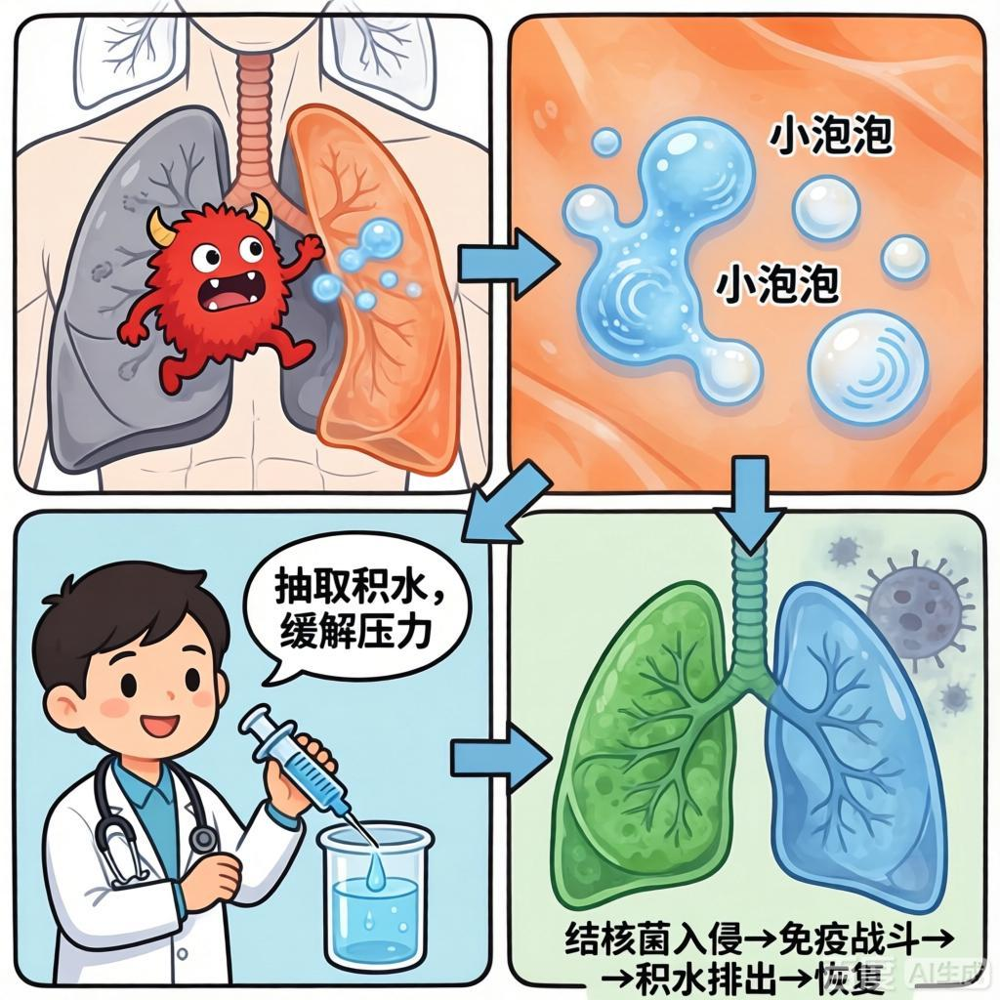
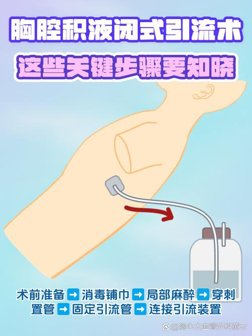

结核性胸膜炎是由结核杆菌引起的胸膜炎症，是最常见的肺外结核病之一。当结核菌侵入胸膜腔时，会引起胸膜充血、水肿及炎性渗出，导致胸痛、呼吸困难等症状。

重要提醒：结核性胸膜炎若未及时诊治，可能导致胸膜增厚、粘连甚至胸廓塌陷，严重影响呼吸功能。
又称纤维素性胸膜炎，病变主要累及壁层胸膜，表现为胸部刺痛，深呼吸或咳嗽时加重。
胸膜表面有大量纤维蛋白及白细胞渗出，伴有浆液性渗出物聚集，形成胸腔积液。
较少见，由结核性胸膜炎发展而来，胸腔积液继发细菌感染形成脓性渗出。
遵循早期、联合、适量、规律、全程的用药原则，标准治疗方案通常包括：
适用于中等量以上胸腔积液患者，首次抽液不超过700ml，以后每次不超过1000ml，每周2-3次。
在抗结核基础上短期使用泼尼松，有助于减轻中毒症状，减少胸膜粘连。

急性期应卧床休息，取半坐卧位有利于呼吸和引流。恢复期可适当活动，避免劳累。
高蛋白、高维生素、易消化饮食，多吃新鲜蔬菜水果，忌辛辣刺激食物。
耐心解释病情，消除焦虑恐惧情绪，增强战胜疾病的信心。
督导按时按量服药，观察药物不良反应，定期复查肝肾功能。
温馨提示：结核性胸膜炎是可以治愈的疾病，关键在于早期诊断、正规治疗和坚持用药。如有疑似症状应及时就医，切勿延误治疗时机。